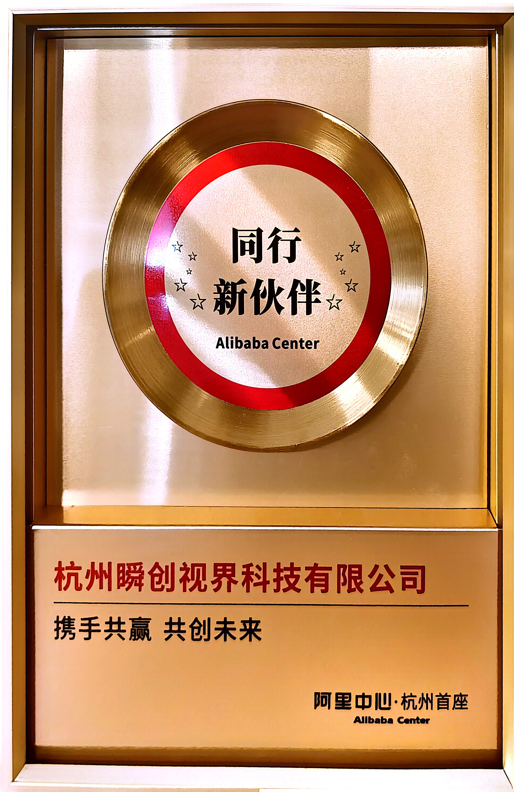
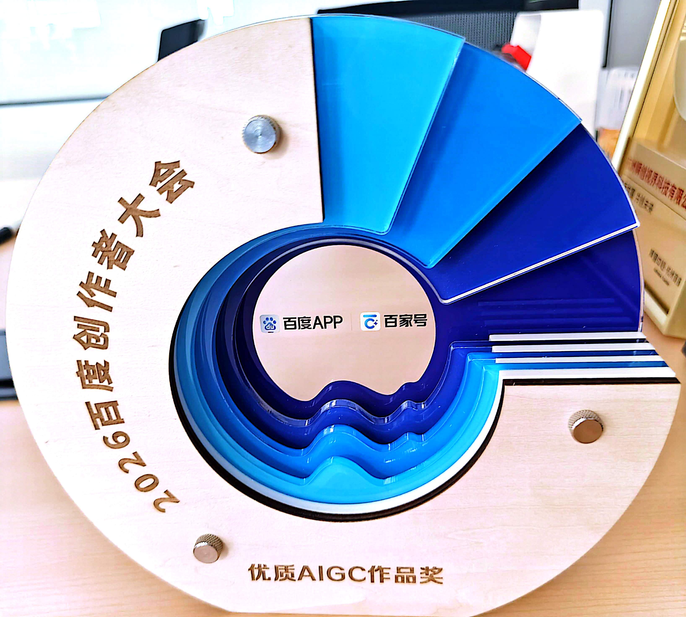
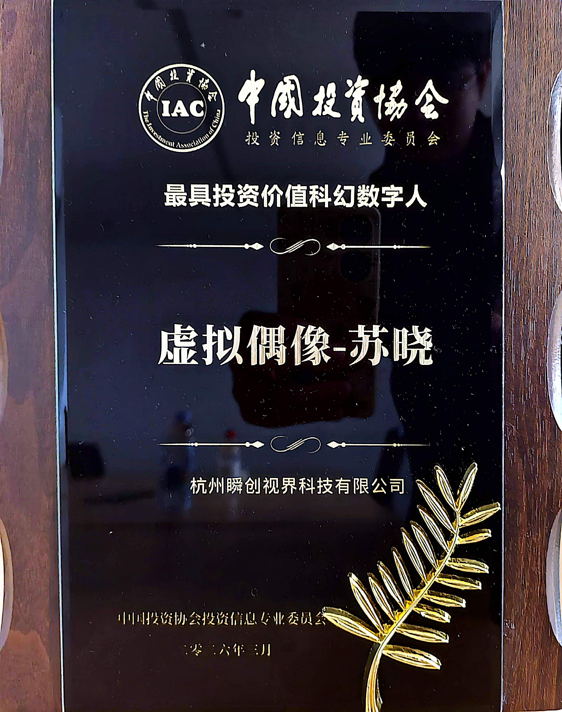
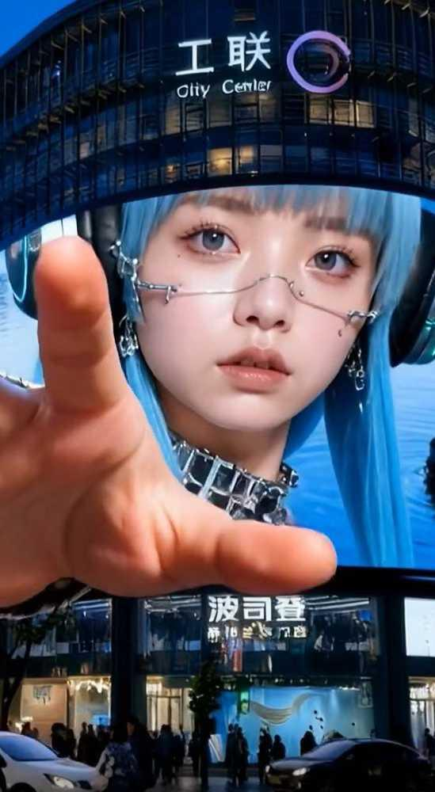
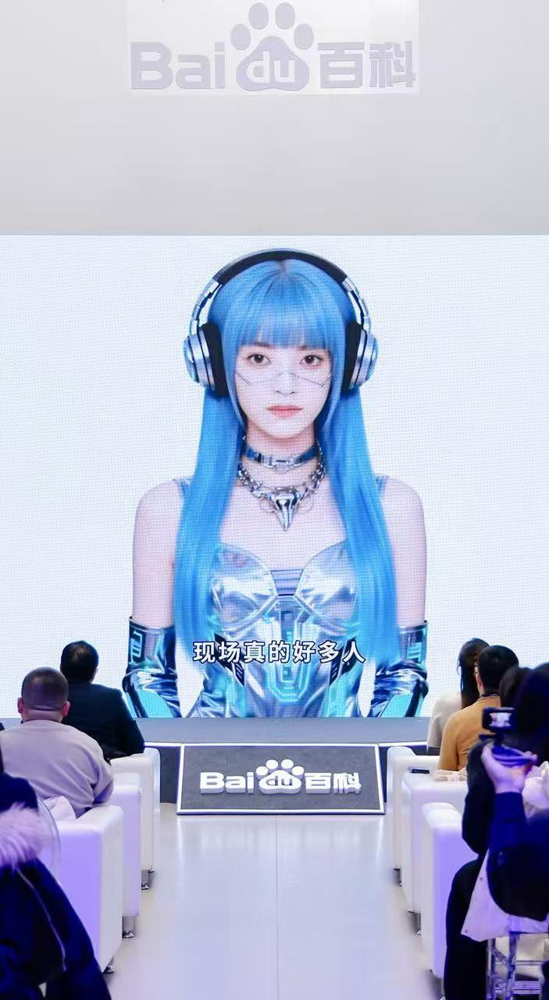
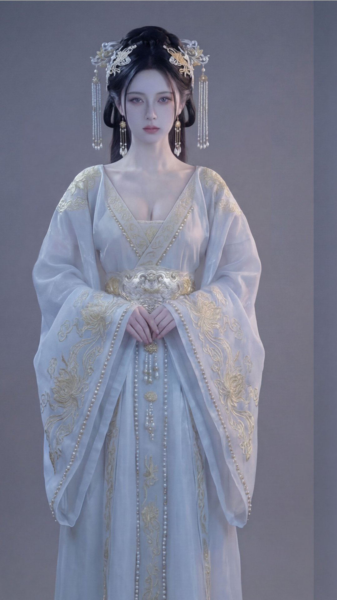
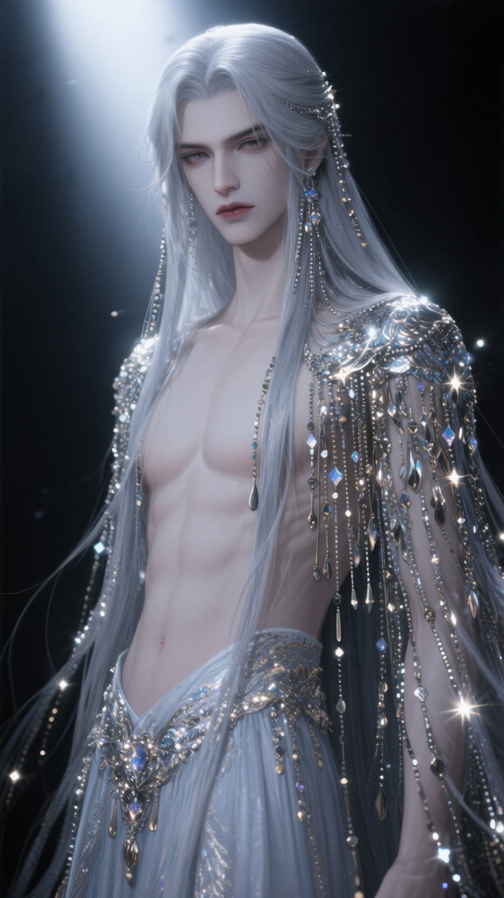
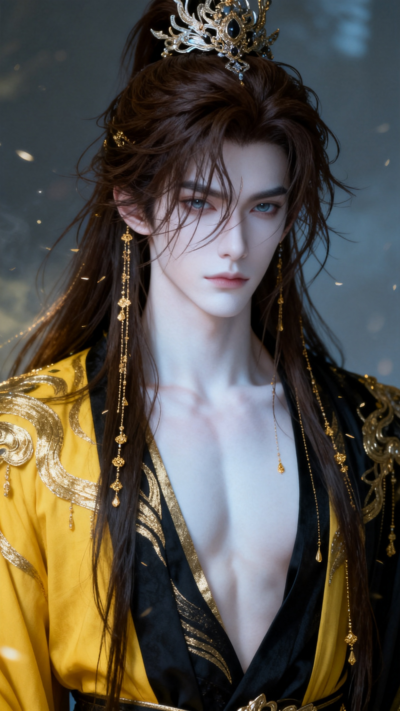
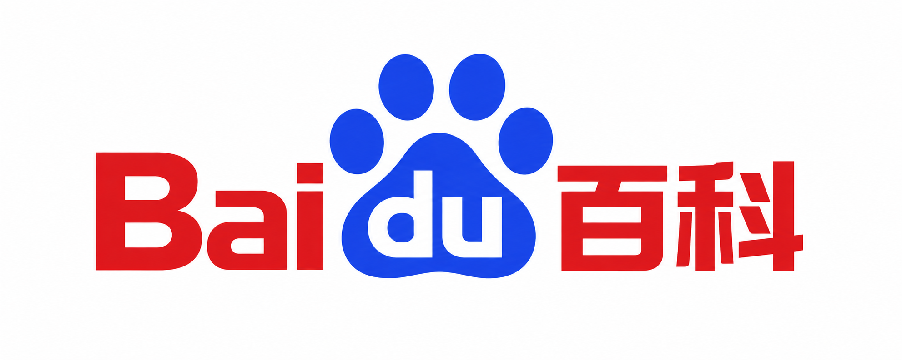

首自制歌曲
视频暂时无法加载，请刷新页面重试。
SCROLL TO EXPLORE ↓ABOUT SHUNCHUANG VISION
关于瞬创视界
让数字生命，成为时代符号。
杭州瞬创视界专注虚拟 IP 孵化与 AI 剧集生产。通过“虚拟 IP 演员阵容”模式，让固定班底出演多部剧，让观众从“追剧”走向“追人”，打造可沉淀、可复用、可多维变现的数字 IP 资产。
红果热度峰值
自制剧
最具投资价值数字人认证
AI 创作
自研分镜工具、换脸工作流与 AI 内容引擎，贯通从形象到内容的生产流程。
内容运营
深耕抖音、红果等平台，以持续的剧集与音乐内容积累 IP 影响力。
IP 商业化
连接品牌定制、IP 授权、品牌联名、音乐与线下演出，拓展商业价值。
IP 宇宙
苏晓、阿瑜、NANA 等角色共生，用跨作品的故事与观众建立情感连接。



瞬创视界通过自研工具构建技术壁垒，为IP的规模化商业化变现提供坚实保障。
新华社&26年中国-中东欧国家创新合作大会
视频暂时无法加载，请切换视频或刷新页面重试。

数字 IP
FLAGSHIP IP · 全能虚拟艺人
苏晓
唱歌 · 演戏 · 主持 · 代言
21岁，MBTI：INFJ，杭州西湖区人。已上线酷狗、QQ音乐、网易云、抖音、B站等全平台。旗下有妹妹苏晞、音乐人猩猩NANA，构成完整IP矩阵。
中国投资协会 IAC 年度认证最具投资价值科幻数字人
荣誉与认可

线下破圈登上杭州工联CC大屏
虚拟IP走入城市公共空间

主流认可百度百科年度盛典主持人
虚拟偶像首次主持国家级互联网活动
IAC最具投资价值奖
中国投资协会年度认证
FIFA 2026世界杯场景
IP跨圈融合 · 全球影响力
MEET THE UNIVERSE
每一种个性，都有自己的舞台。

01 / VIRTUAL ACTOR
阿瑜
古风虚拟演员
以超写实古风形象演绎不同故事。首部主演短剧《蛇宫旧梦》在红果突破 4000 万热度，另有 10 部以上待播剧集储备。
4000 万热度 · 10 部+待播
02 / MUSIC CREATOR
猩猩 NANA
潮流音乐制作人
苏晓的好友兼音乐制作人，精通各类乐器，也会脱口秀。通过 NANA 电台，用鲜明个性与幽默表达，分享属于自己的声音。
音乐制作 · 电台 · 脱口秀
03 / VIRTUAL IDOL
苏晞
新生代虚拟偶像
苏晓的妹妹，以演唱与音乐表达构建自己的数字舞台。与苏晓、NANA 在《造梦次元》中同台，探索跨越时空的沉浸式演出。
音乐表达 · 沉浸式演出04 / VIRTUAL CHARACTER
墨珩
《请陛下翻牌子》· 皇夫墨珩
在全网百万粉丝共同参与的皇帝选妃互动节目中，以一袭黑衣、矜贵冷艳的形象脱颖而出，成为粉丝票选的首席皇夫。
古风角色 · 粉丝互动
05 / VIRTUAL CHARACTER
予寒
《请陛下翻牌子》· 白月光
清冷病弱，温柔疏离。身处争宠中心，却始终是最不愿争的人；面对偏爱保持清醒，面对误解选择退让。安静克制之下，那份仿佛随时会消散的破碎感，让人心疼，也让人舍不得放手。
病弱白月光 · 清冷通透 · 破碎感
06 / VIRTUAL CHARACTER
慕辰
《请陛下翻牌子》· 贵公子
张扬贵气的世家公子，毒舌傲娇，嘴上永远不肯认输。吃醋时比谁都刻薄，真正遇到危险时却总是第一个冲上去。看似骄纵难哄，实则心软得藏不住，一次次用行动拆穿自己的嘴硬。
傲娇毒舌 · 世家贵气 · 嘴硬心软07 / VIRTUAL CHARACTER
云疏
《请陛下翻牌子》· 琴师
温润如玉的琴师，琴声清雅、言辞得体。温柔体面之下，藏着对出身与宠爱的不安。他会争、会嫉妒，也有自己的小心思，却始终守着不伤人的底线，让人看见从容背后的敏感。
温柔才子 · 敏感自卑 · 有心机有底线08 / VIRTUAL CHARACTER
栖月
《请陛下翻牌子》· 侍君
鲜活灵动、敢爱敢闹的年下侍君。会撒娇、会告状、会吃醋，也会为了让陛下多看自己一眼闹出惊天动静。任性背后是毫不掩饰的渴望被爱，比起懂事，他更敢直接说出自己的心意。
年下作精 · 直球争宠 · 小狗感SELECTED WORKS
精选作品
【AI短片】屏幕之外
造梦次元x苏晓
【AI短片】雪脉
0204夏日长隆
歌手Yui的个人MV
HIT SERIES
爆红短剧
IP SERIES
IP系列
POWERED BY AI
想象无界，创作有解。
从灵感到荧幕
打通数字 IP 的完整生命旅程。
赋予形象
IP 设计与孵化
从人物设定到视觉风格，让独一无二的数字生命拥有自己的表达。让故事发生
AI 内容生产
自研分镜工具、换脸工作流与内容引擎，让角色持续走进新的故事。与世界相遇
全平台内容运营
短剧、音乐、演出，多种内容形态连接不同圈层，积累真实的喜爱。让价值生长
IP 商业化
品牌联名、IP 授权与线下体验，让数字影响力延伸到真实生活。SELECTED WORKS
从数字世界，走向每一次共鸣。

MUSIC / LIVE PERFORMANCE
造梦次元
苏晓、苏晞与 NANA，跨越次元的音乐相遇。

AI SERIES / HISTORY
历史十大遗憾
以 AI 重述历史，让故事拥有新的可能。
与优秀的伙伴，共创下一种可能

LET’S CREATE WHAT’S NEXT
下一个数字宇宙
与你共同开启。✦
品牌合作 · IP 授权 · 内容共创 · 创作者入驻